Bienvenue sur mon portfolio !
Bienvenue dans mon univers géographique ! Moi, c'est Théo Bucaille, captivé par la géographie et les Systèmes d’Information Géographique (SIG) ! Actuellement en licence pro SIGDAT à l’université de Caen Normandie 🎓, je plonge chaque jour un peu plus dans l’univers de la cartographie et de l’analyse spatiale.
Toujours curieux et avide de nouvelles connaissances, je ne compte pas m’arrêter là ! Mon objectif ? Un master en géomatique pour affiner mes compétences, explorer de nouveaux horizons et continuer à travailler avec les données géographiques.
Si toi aussi tu aimes les cartes, l’aménagement du territoire ou simplement découvrir le monde autrement, alors bienvenue ! Je t’invite à jeter un œil à quelques-unes de mes réalisations ci-dessous.
À très vite pour échanger sur ce beau voyage à travers l'espace et les données ! 🌎
Mes Productions
 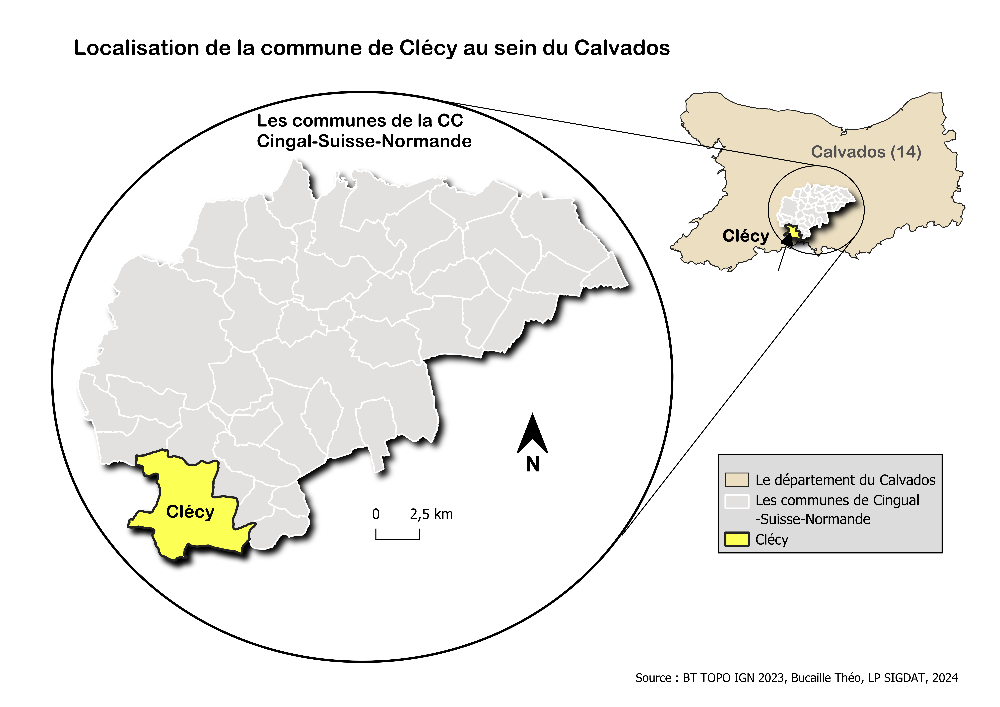
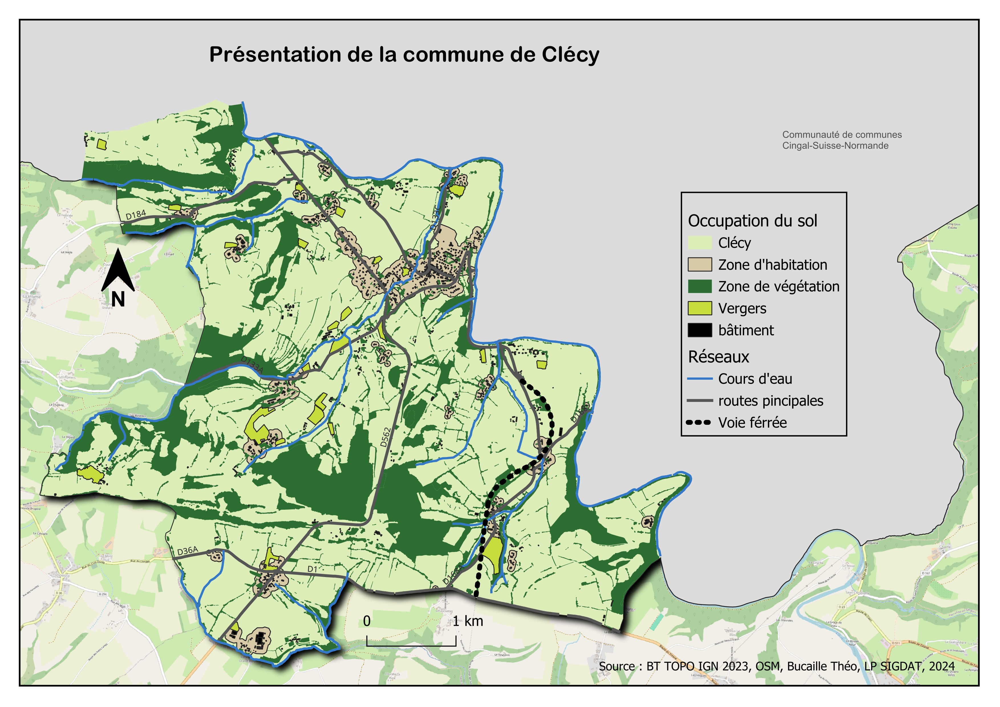
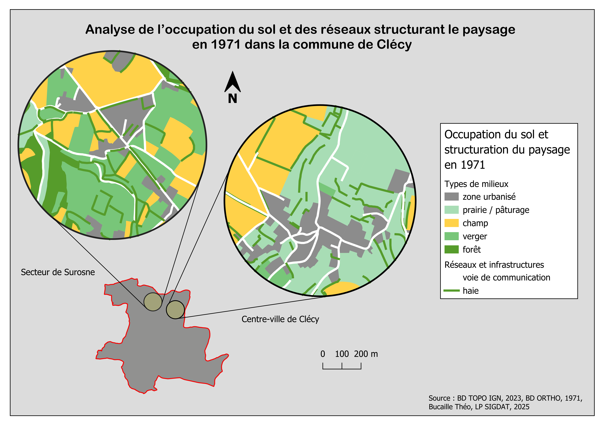
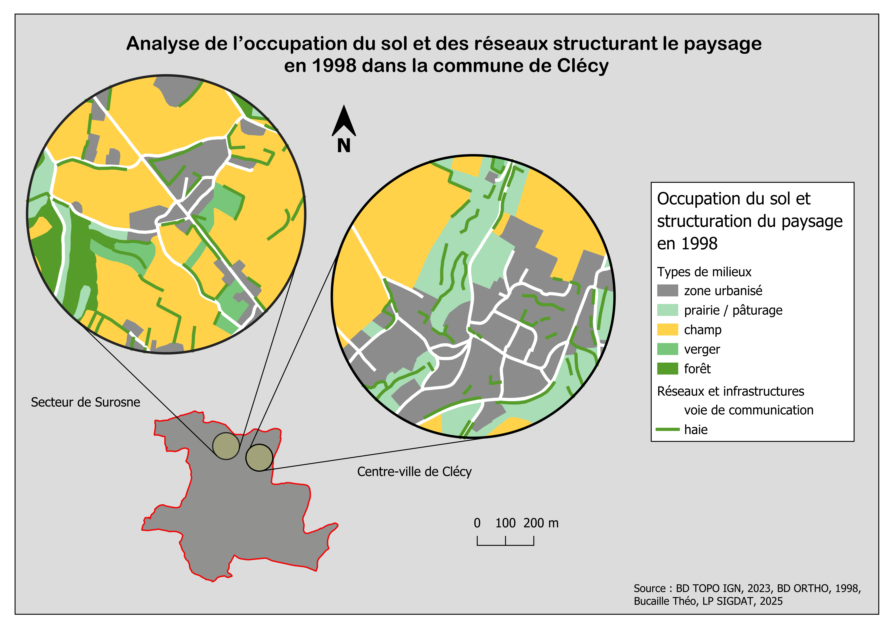
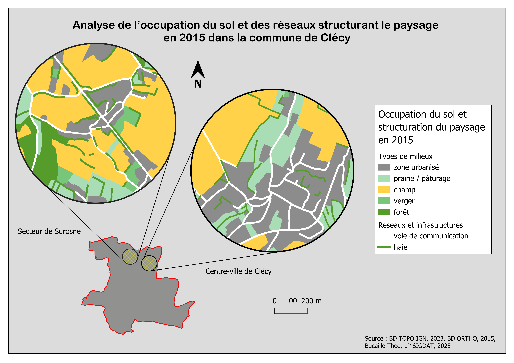
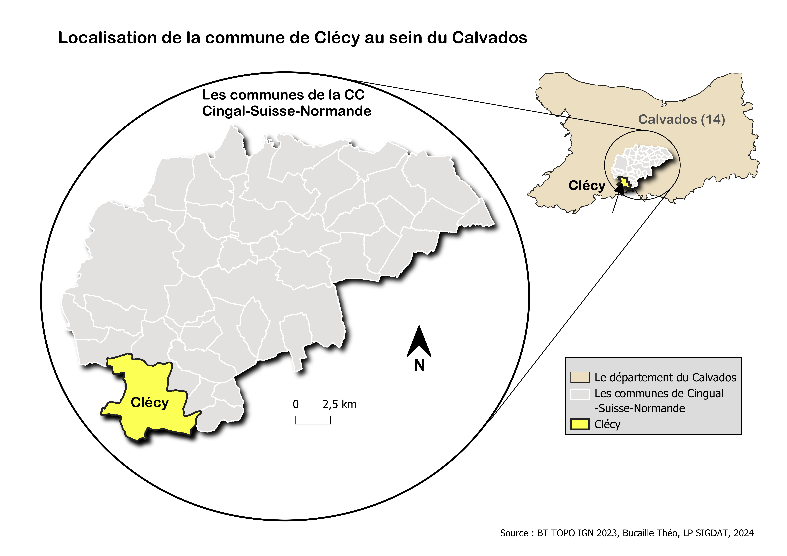
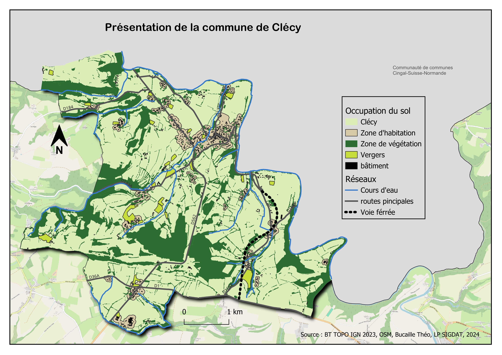
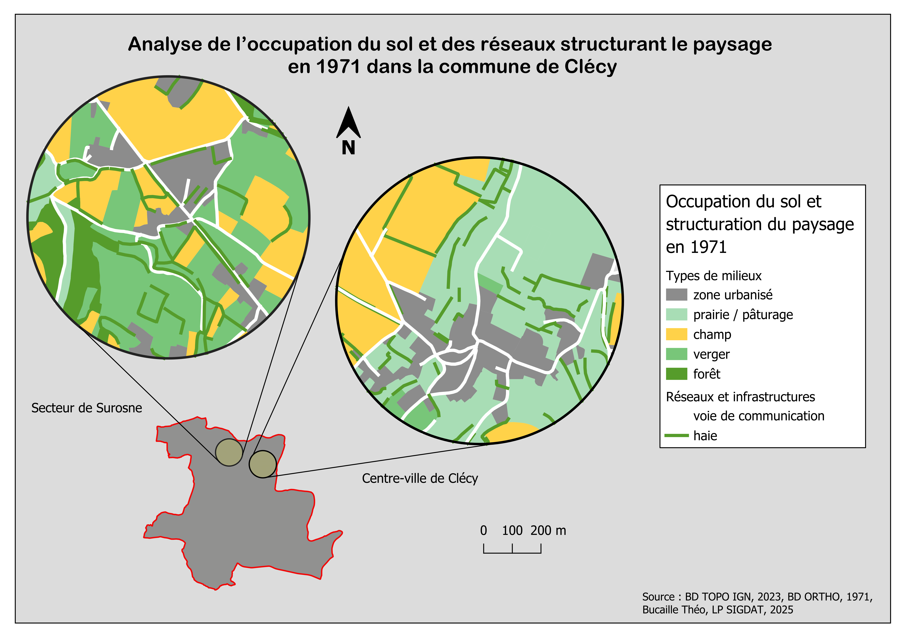
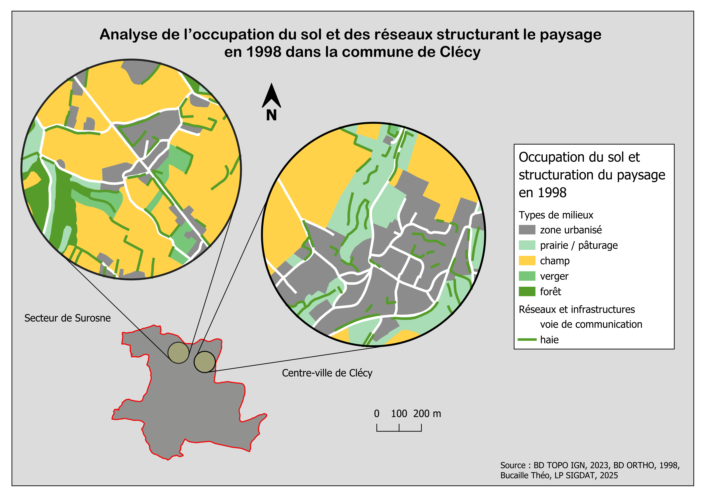
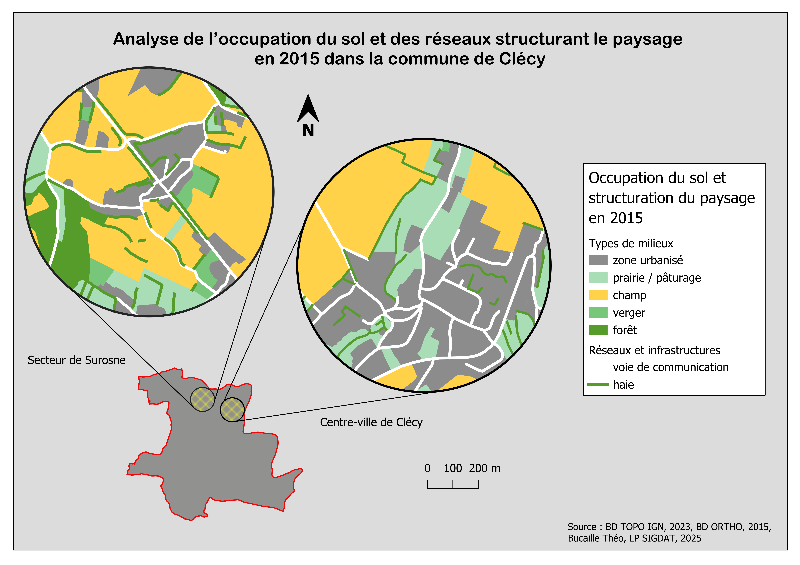

Incendies de forêts en France (2010 - 2023) : Une menace croissante / Analyse des causes, impacts et prévention avec un focus sur la région Provence-Alpes-Côte d'Azur - Lpro
Infographies et posters

Diagnostic de territoire Communauté de communes Seulles Terre & Mer 📖 - Lpro
Diagnostic de territoire
 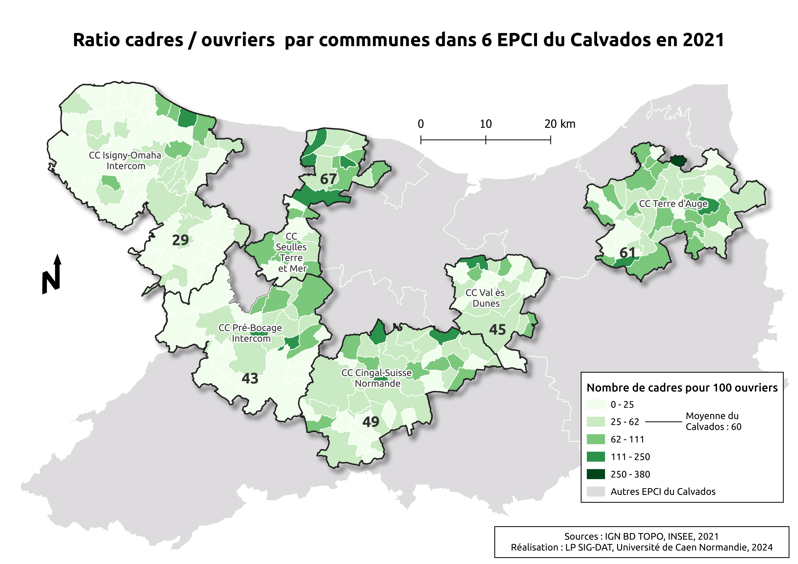
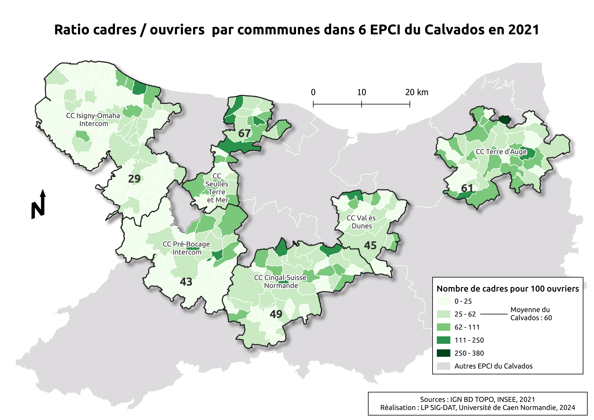

Détection des écotones avec LIDAR 📖 - Lpro
Programmation R
Un lien étroit entre logement étudiant et situation familiale ? 📖 - L2
Terrain et techniques d'enquêtes
Enquête avec des entretiens sur le logement étudiant 📖 - L2
Terrain et techniques d'enquêtes
Analyse film 📖 - L2
Dossier photographique